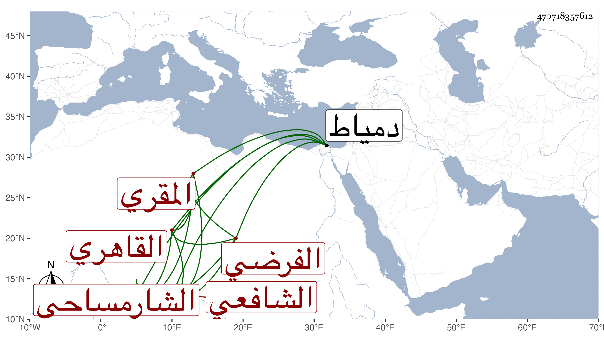

0902Sakhawi.DawLamic.ITO20230111-ara1.EIS1600.470718357612
Biography ID: 470718357612
49
أحمد بن علي بن أبي بكر الشهاب بن النور بن الزين الشارمساحي ثم القاهري الشافعي المقري الفرضي ، وشارمساح من أعمال دمياط . شيخ جاوز الثمانين بيسير لكنه لم يكتف بسنه حتى ادعى أنه عمر وجاز المائة بأربعين سنة فأكثر وأعانه على ذلك الهرم فهرع إليه من لا يحصى ثم تبين لهم حيث روجعت فيه فساده وظهور الخلل فيه بالكشط في أوراق عرضه وغيرها فانكشف المعظم عنه . وقد حفظ العمدة والشاطبيتين والحاوي وعرض في شعبان سنة إحدى وتسعين فما بعده على الأبناسي وابن الملقن والعسقلاني والغماري والنور أخي بهرام وأبي العباس أحمد بن عمر بن يوسف المقري الضرير عرف بالشنشي ، وأجازوا له ولقب في أكثرها بالولد على العادة ، وسمع على الفوي في سنة اثنتين وعشرين صحيح مسلم وسيرة ابن سيد الناس وكان يذكر أنه أخذ القراءات عن العسقلاني وأبي الصفا خليل بن المسيب وغيرهما كأخي بهرام وأنه تفقه بالأبناسي والطبقة وأخذ العربية والفرائض عن الغماري وأنه تجرد وطاف البلاد وكل ذلك ممكن ، وهو ممن برع في الفرائض والحساب والقراءات ومهر في الحاوي مع مشاركة في فنون كالنحو وكتب على مجموع الكلائي شرحا حافلا في مجلد أقرأه الطلبة وكذا أخذ عنه القراءات والفرائض والحساب جماعة ويقال أن ممن أخذ عنه الشمس البامي وحدث باليسير . مات وقد ضعف بصره في رجب سنة خمس وخمسين بعد أن كتب على استدعاء بعض الأولاد ودفن داخل المدرسة الجاولية رحمه الله وإيانا .
